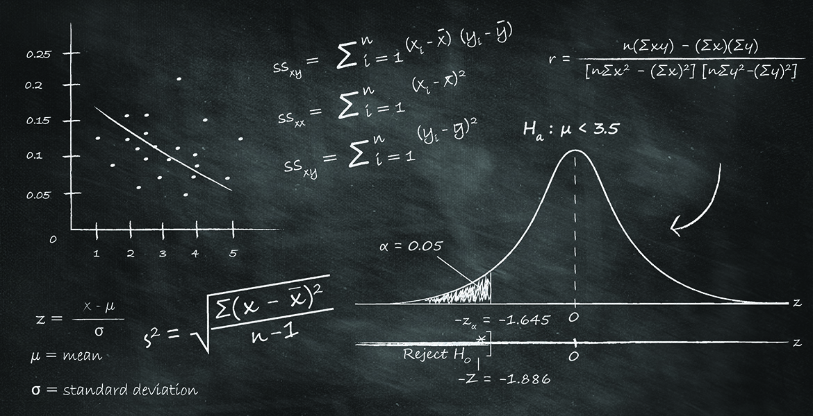

Assignment:
- Give a definition of statistics,
- What is a dataset? From the observation units to the dataset. Attributes and variables,
- Find and list interesting applications of statistics to cybersecurity problems.
Definiton of statistics
Statistics is a part of Mathematics that makes use of probability theory and mathematical methods to simplify and to understood the data we collect. It assists in characterizing the probability where the generalizations of data are true. Statistics refers to a branch dealing in the study of collecting, analyzing, interpreting, organizing, and presenting data. Statistics help inform us about everything from what popular movies are out, how many people were convicted of crimes last year, whether global warming is occurring, etc. It has many uses in various sectors like psychology, sociology, business decision-making processes, geology, weather forecasting, and more. There are two kinds which are descriptive statistics and inferential statistics. We describe the data or collection data in a summarized way in descriptive statistics. However, in inferential statistics, we make use of it in order to explain descriptive kind. We use both of them on a large scale. In fact, there is another kind of stats where descriptive transitions into inferential statistics.

What is a dataset? From the observation units to the dataset. Attributes and variables
A data set is a collection of related, discrete items of related data that may be accessed individually or in combination or managed as a whole entity. A data set is organized into some type of data structure. In a database, for example, a data set might contain a collection of business data (names, salaries, contact information, sales figures, and so forth). The database itself can be considered a data set, as can bodies of data within it related to a particular type of information, such as sales data for a particular corporate department. The term data set originated with IBM, where its meaning was similar to that of file. In an IBM mainframe operating system, a data set s a named collection of data that contains individual data units organized (formatted) in a specific, IBM-prescribed way and accessed by a specific access method based on the data set organization. Types of data set organization include sequential, relative sequential, indexed sequential, and partitioned. Access methods include the Virtual Sequential Access Method (VSAM) and the Indexed Sequential Access Method (ISAM).
Variable data is quantitative data that can be acquired through measurements, meaning the data which can be used to measure some physical characteristics such as length, width, temperature, time, strength, thickness, pressure, and so on. Variable means the measured values can vary anywhere along a given scale. Attribute data, on the other hand, is qualitative data that have a quality characteristic or attribute that is described in terms of measurements. Attribute data is something that can be measured in terms of numbers or can be described as either yes or no for recording and analysis.
| Variable Data | Attribute data |
|---|---|
| Quantitative data that can be acquired through measurements, meaning the data can be used to measure some physical characteristics. | Qualitative data that have a quality characteristic or attribute that is described in terms of measurements. |
| Data can take on numerical value and are not confined to nominal categories. | Data fall into discrete, named value categories. |
| Data can be meaningfully added or subtracted, meaning mathematical operations can be performed on variable data. | No mathematical operations can be performed on attribute data because you cannot meaningfully add or subtract values of the data. |
| Variable data can be used for more sophisticated analysis. | No analysis can be performed on attribute data rather than simple counts. |
Find and list interesting aplications of statistics to cybersecurity problems
Statistics has so many applications in cybersecurity. The most relevant ones are:
- netork detection,
- virus detection,
- attack response,
- risk analysis.
References
[1] toppr.com, “Statistics in Maths: Definition, Types, Chart and Examples”, 2021, URL.
[2] techtarget.com, “Definition of dataset”, 2016, URL
[3] differencebetween.net, “Difference Between Variable and Attribute”, 2021, URL
[4] reciprocity.com, “The Statistical Analysis of Measuring Cybersecurity Risk”, 2022, URL